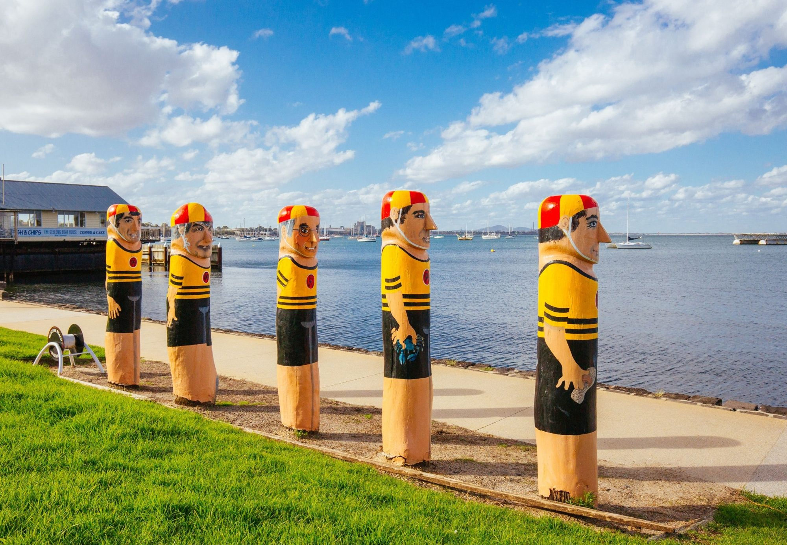

Most people who move here are trading Melbourne’s scale for a hospital they can actually get to know, and a coastline at the end of the street. That trade is real, and so is what you give up. Both sides, plainly.
What Geelong is actually good at

What to weigh up
None of the following should stop you. All of them are worth knowing before you sign, because they are what people tell us they wish they had asked about.
When another city is the better answer
If you need a large metropolitan subspecialty team around you, Melbourne is the honest recommendation — and close enough that Geelong can be a later move rather than a rejected one. If the draw is coastal lifestyle with regional breadth at a different latitude, Newcastle or the Gold Coast offer a similar shape. And if it is the Bellarine itself rather than Geelong specifically that appeals, the peninsula towns are worth a conversation, though the clinical roles are concentrated in Geelong, not out on the coast.
Geelong asks you to trade Melbourne’s scale for a hospital you can actually get to know.
A typical week
A ten to twenty-minute drive to work. A walk along the waterfront or Eastern Beach before or after a shift. Saturday morning on Pakington Street or at the Waterfront Farmers Market. An afternoon at Ocean Grove or Barwon Heads, or the Bellarine wineries, depending on the wind. The Great Ocean Road when you want a full day out. Melbourne when you want a gig, an airport or the MCG.
Geelong gives you Victoria’s only tertiary case mix outside Melbourne, a commute in minutes and the Great Ocean Road at your back door, for materially less than Melbourne costs. What it asks in return is a smaller specialist bench and a city many times smaller than the capital. If that trade appeals, few places in Australia offer it this close to a state capital.
- If you want a capital’s depth and sub-specialty range, Melbourne is an hour by train and the obvious comparison.
- If regional Victoria is the real draw, the Victoria brief sets out the wider state and where the opportunities sit.
- If you would take the same deal in New South Wales, Newcastle is its closest equivalent — a coastal second city two hours from Sydney.
Geelong is the rare regional city where you can genuinely manage without a second car and still reach a capital for dinner. Clinicians who settle here tend to be the ones who wanted the coast and the Otways without giving up a city’s services.